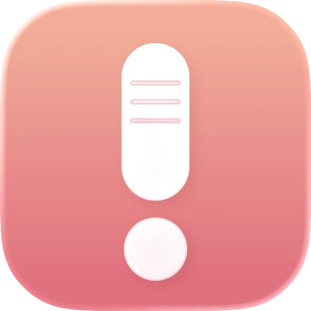
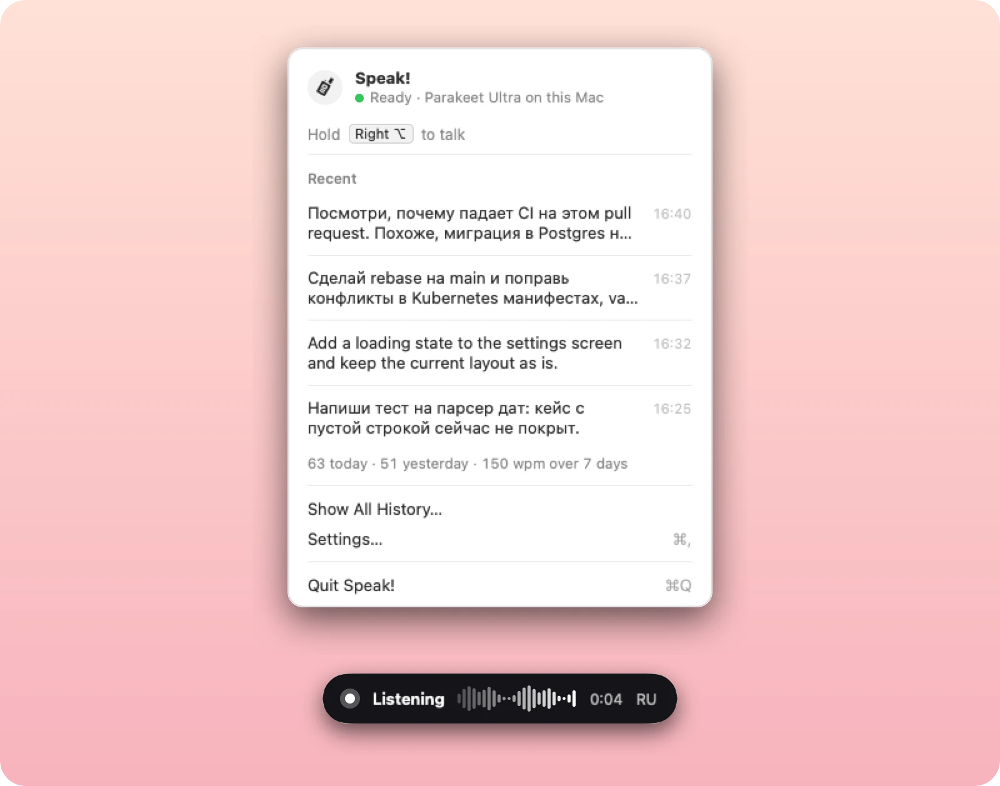

Зажмите клавишу. Скажите. Отпустите.
Текст уже в поле. Speak! переводит голос в текст прямо на вашем Mac, без интернета и бесплатно, в любом приложении.
Скачать для macOS
Медленнее всего — печатать.
Говорим мы со скоростью 130–160 слов в минуту, печатаем — 40–60. Если весь день уходит на промпты для Claude Code, Codex, Cursor или ChatGPT, темп задаёт клавиатура. Проговорите мысль целиком и отправьте.
От отпускания клавиши до текста в поле — для десятисекундной фразы на базовом MacBook Air M1.
Байт уходит в сеть с локальными движками. Работает даже в самолёте, и платить не за что.
Ни подписки, ни регистрации, ни лимита на слова.
Как это работает
Speak! живёт в строке меню и молчит, пока вы не зажмёте клавишу.
Зажмите правый ⌥
Или правый ⌘, или любую клавишу из настроек. Короткие нажатия не считаются, так что сочетания с ⌥ работают как раньше.
Говорите
Небольшая плашка показывает громкость голоса и время. Хоть пару слов, хоть пять минут.
Отпустите
Текст напечатается в приложение, где вы сейчас работаете: терминал, редактор, чат, комментарий к pull request.
Для тех, кто весь день разговаривает с ИИ
В промптах для агентов полно терминов, имён файлов и сразу двух языков. Speak! настроен именно на это.
Русский и английский в одной фразе
«Сделай rebase на main» выходит с rebase так, как вы его пишете, а не «ребейз».
Ваши термины запоминаются
Выделите неверно распознанное слово в любом приложении, нажмите правой кнопкой, выберите Fix Spelling in Speak! и впишите, как правильно. Со следующей диктовки слово будет выходить верно.
Понимает, что вы имели в виду
С Parakeet небольшая дополнительная модель ловит слова, похожие на ваши термины по звучанию, и «пул реквист» всё равно становится pull request.
Не трогает буфер обмена
Текст печатается прямо в поле. Поля паролей Speak! пропускает и ничего из них не сохраняет.
Не теряет диктовки
Если текст не удалось вставить, он ждёт в меню, и его можно скопировать одним нажатием. Если не сработало распознавание, запись сохраняется, и её можно распознать заново.
Обновляется в один клик
Когда выходит новая версия, об этом скажет меню. Нажмите «Install»: Speak! скачает её, проверит подпись и перезапустится.
Выберите движок
По умолчанию всё работает на Mac. Облако — только если вы его выберете, и на вашем ключе.
| Движок | Где работает | Размер | Для чего |
|---|---|---|---|
| NVIDIA Parakeet (по умолчанию) | На вашем Mac | 610 МБ | Скорость, русский и английский, без интернета |
| Whisper Tiny / Small / Turbo | На вашем Mac | 75 МБ – 1,5 ГБ | Языки, которых нет в Parakeet; Turbo — лучшее качество Whisper |
| Google Gemini | Облако Google, ваш ключ API | — | Речь, где языки сильно перемешаны |
Вопросы
Speak! работает без интернета?
Да. Основной движок NVIDIA Parakeet и модели Whisper работают на самом Mac, ничего никуда не отправляется. Звук уходит в Google только с движком Gemini, который включается по желанию и работает на вашем ключе.
Правда бесплатно?
Да. Без подписки, без регистрации и без лимита слов. Исходный код лежит на GitHub.
На каких Mac работает?
На Mac с процессором Apple Silicon и macOS 14 Sonoma или новее.
Почему macOS блокирует первый запуск?
Speak! подписан автором, но не прошёл нотаризацию Apple. Откройте «Системные настройки» → «Конфиденциальность и безопасность», найдите сообщение о том, что Speak заблокирован, и нажмите «Всё равно открыть». Это нужно сделать один раз.
Какие разрешения нужны?
Микрофон — чтобы слышать вас, пока клавиша зажата. Универсальный доступ — чтобы печатать текст. Мониторинг ввода — чтобы замечать горячую клавишу. Окно первого запуска проверит их само.
Чем это отличается от встроенной диктовки macOS?
Вы держите клавишу, а не включаете режим. Русский и английский уживаются в одной фразе, ваши термины запоминаются, а каждая диктовка остаётся в истории, откуда её можно скопировать.
Хватит печатать промпты.
Скачайте Speak!, зажмите правый Option и продиктуйте следующий.
Скачать для macOS